A complete account of the investigation into whether Sentinel-1 SAR imagery improves land-cover classification when Sentinel-2 optical observations are partially obscured by simulated cloud cover — the data-access strategy, the modeling approach, two complementary experiments, and the validity checks built into the methodology.
Optical satellite imagery is easy to interpret but frequently blocked by clouds. Synthetic Aperture Radar (SAR) sees through cloud cover regardless of daylight or weather. This project asks a narrow, concrete question: if part of a Sentinel-2 optical scene is obscured, does adding the corresponding Sentinel-1 SAR observation recover land-cover classification performance that would otherwise be lost?
Answer: yes, and the benefit grows with how badly the optical image is degraded. At 75% simulated cloud coverage, SAR-assisted models beat optical-only models by a wide margin in both experiments run for this project — a ~28% relative macro-F1 gain in a 19-class evaluation, and an even larger absolute gap (0.66 vs. 0.53) in an 8-class evaluation built around deeper per-class training data. At lighter degradation (0–25% coverage), a properly-trained optical-only model holds up reasonably well and SAR's benefit is smaller — the advantage is concentrated at heavy degradation, not universal.
The project has two complementary parts. A broad experiment spans all 19 official land-cover classes present in the chosen data and compares three SAR-fusion designs against an optical-only baseline. A deep experiment restricts to 8 well-supported classes with 3–6× more training examples each, isolating whether training-data depth alone — as opposed to SAR — explains performance gains. It does not, uniformly: more depth helped the SAR-fusion model consistently, but was a wash or slightly negative for the optical-only model under heavy degradation, evidence that training depth and SAR fusion solve different problems. Throughout, the methodology includes explicit validity safeguards — per-class support checks before computing aggregate metrics, fusion-design selection based on validation data rather than test data, and empirically verified absence of data leakage between the two experiments — reported in full in Section 7 and referenced wherever they matter to a result.
The case study (Case study - SAR-Assisted.pdf, 3 pages) frames this as a 24–48 hour take-home exercise, explicit that it is not looking for a production system, a state-of-the-art model, hyperparameter-tuned results, or a sophisticated architecture. It asks for three experimental conditions:
| Condition | Description | Purpose |
|---|---|---|
| A | Sentinel-2 optical only, no degradation | Establishes the ceiling |
| B | Same model, evaluated on artificially cloud-masked optical input | Shows the cost of degradation |
| C | The same degraded optical input, plus the paired Sentinel-1 SAR observation | Tests whether SAR recovers the loss |
The primary comparison the case asks for is B vs. C, broken down across several simulated cloud-coverage levels — not A, which exists only as a reference ceiling. Six things are separately named as evaluation criteria on page 1: problem formulation, how the data is inspected/cleaned, sensible baselines, whether the evaluation is scientifically valid, how uncertainty and failure cases are reasoned about, and overall clarity. Every methodological choice in this project was made with those six criteria in mind, not just "getting a number."
Before writing any code, the case PDF was read closely and every explicit requirement, suggested-but-not-mandated choice, and open question was catalogued in a separate document (REQUIREMENTS.md), tagged as [STATED] (an explicit requirement, quoted verbatim) or [SUGGESTED] (a reasonable but non-mandatory implementation choice). This mattered because several important decisions — which BigEarthNet label scheme to use, how exactly to simulate clouds, which fusion architecture, how many classes to select — are not specified in the PDF at all. Key things confirmed explicitly stated rather than assumed:
BigEarthNet v2.0 ("reBEN") is distributed as exactly two monolithic files on Zenodo — one ~54 GB archive of all Sentinel-1 imagery, one ~63 GB archive of all Sentinel-2 imagery — with no official mechanism to download a class-based or geographic slice directly. Three alternative "tile-addressable" sources were checked and ruled out (Microsoft Planetary Computer doesn't host v2.0; Radiant MLHub only has the older v1.0; source.coop's mirror is also v1.0, S2-only) — so working within the two official archives was unavoidable. The full research trail lives in DATA_ACCESS.md; this section summarizes the outcome and reasoning.
The two official metadata files (~4.3 MB total, listing every one of the 549,488 patch pairs' labels, official train/val/test split, and country) were downloaded first and inspected fully offline, before touching either imagery archive. This resolved: the class list (19 official CORINE-derived classes), confirmation that Sentinel-1/Sentinel-2 pairing is a lossless 1:1 lookup by patch ID (verified directly — zero nulls, zero duplicates across all 549,488 rows), and that the official split is geographically de-correlated by design (the reBEN paper's own stated contribution) — used as-is throughout, never re-split.
A small HTTP range request (30 MB from the start of each archive) confirmed two things that shaped everything downstream: both archives are single, non-seekable zstd compression frames (no way to jump to an arbitrary point — only sequential decompression from byte zero is possible), and archive entries are ordered alphabetically by product name (chronological for Sentinel-2; two large satellite-ID blocks — S1A then S1B — for Sentinel-1). This meant a subset could be obtained by streaming from byte zero and writing only the matching patches to disk, aborting the connection once past the last needed product — without ever downloading a full archive.
Working entirely from the already-downloaded metadata: the five alphabetically-earliest Sentinel-2 products were selected (Austria, Finland ×2, Ireland, Portugal) — cheap to reach since the archive is itself alphabetically ordered. These five products yield 34,190 patches covering all 19 official classes. Patches were further restricted to those whose paired Sentinel-1 scene comes from the S1A satellite (not S1B) — since the S1 archive is split into a contiguous S1A block followed by S1B, this cut the required S1 stream from an estimated ~35 GB down to ~1.4 GB, while still preserving all 19 classes and all three splits. This left 13,932 candidate paired patches — the shared source both experiments in Section 4 draw from.
In a multi-label dataset, "examples per class" is not fixed by total patch count — it is set by which classes are chosen to model and how a fixed budget is allocated across them. Two experiments were designed from the same 13,932-patch candidate pool to explore this trade-off directly, rather than committing to a single dataset design.
A stratified sample of 4,200 patches was drawn, proportional to the official train/validation/test split sizes, with a rarest-label-first allocation so minority classes keep some representation. Final counts: 4,200 patches (train 2,040 / validation 1,097 / test 1,063), spanning all 19 official classes present in the candidate pool.
The 8 best-supported classes were selected — verified to have solid examples in all three official splits (Pastures, Coniferous/Mixed/Broad-leaved forest, Arable land, Transitional woodland/shrub, Complex cultivation patterns, and the mixed-agriculture class). These 8 classes already appear in 97.8% of the entire candidate pool, so restricting to them costs almost no data. A much larger sample of 8,000 patches was drawn from the same candidate pool — no new tiles, no new geographic scope, just a second sequential pass over the same archive byte range. Final counts: 8,000 patches (train 3,862 / validation 2,089 / test 2,049), with zero classes missing support in any split — unlike the broad experiment (Section 7.1).
| Broad experiment (19 classes, 4,200 patches) | Deep experiment (8 classes, 8,000 patches) | |
|---|---|---|
| Weakest kept class, train examples | ~250–290 | 830+ |
| "Pastures," train examples | 859 | 1,676 |
| Classes with 0 support in some split | 3 | 0 |
Caveat disclosed openly: both experiments draw from the same 5 tiles and 4 countries, and restricting to S1A-paired patches is a convenience constraint for this project's bandwidth/time budget, not a scientific one — it slightly biases the sample toward whichever sub-area of each tile happened to be nearer an S1A overpass. Geographic diversity remains a disclosed limitation (Section 12) for both experiments, not something either design addresses.
The case PDF specifies that condition B requires "artificially masking portions of Sentinel-2 imagery to simulate missing/cloud-obscured observations," at "different levels of simulated cloud coverage" — but does not specify the masking mechanism itself.
Implementation: 1–3 randomly placed, randomly sized rectangular occlusions per patch, with combined area iteratively adjusted against the actual accumulated mask (not a naive pre-computed area budget, which was found — and corrected — to systematically under-shoot the target coverage due to rectangle overlap) until the target coverage fraction is reached to within about 1% average error. Masked pixels are replaced with that band's mean value over the unmasked region of the same patch — a neutral "no information" fill, rather than zero, which would otherwise read as a real, highly informative extreme reflectance value. Four coverage levels were evaluated throughout: 0%, 25%, 50%, and 75%. Mask realizations are deterministic per test patch (seeded by patch position), so every model configuration is evaluated against the exact same masked images at each level.
A small CNN — four convolutional blocks (32→64→128→256 channels, each with batch normalization, ReLU, and 2×2 max-pooling), followed by global average pooling and a linear classifier — trained from scratch on Sentinel-2 imagery (12 bands, resized to 120×120 pixels), multi-label BCE loss. The same trained model is re-evaluated on masked inputs at each coverage level — train once, evaluate under degradation. About 400,000 parameters, no pretrained weights, ~70–80 seconds per training epoch on a 12-core CPU.
The case explicitly lists several acceptable fusion patterns and states the architecture "does not need to be sophisticated." Three configurations were built and compared rather than assuming one was best:
Class-balanced training is used throughout: per-class positive weighting (pos_weight = min(neg/pos, 15)) in the loss function, computed from train-split label frequency only. SAR backscatter values (linear power/amplitude) were converted to decibels before normalization, a standard SAR preprocessing step.
Multi-label metrics reported throughout: macro-F1 (primary), micro-F1, per-label ("Hamming") accuracy, exact-match accuracy, and mean predictive entropy as a simple uncertainty proxy. Results are broken down by condition and by cloud-coverage level, per the case's explicit ask.
Before computing macro-F1, every class's example count is checked across all three official splits. A class with zero examples in any split is excluded from the headline metric: zero train examples means no model could ever learn it; zero validation or test examples means it can never be meaningfully scored (F1 silently defaults to 0, which reads as a failure but is actually a missing-ground-truth artifact). This check depends only on label counts in the data — never on any model's predictions — so it cannot selectively favor one model over another.
| Class | Train examples | Validation examples | Test examples |
|---|---|---|---|
| Beaches, dunes, sands | 0 | 3 | 30 |
| Marine waters | 51 | 0 | 0 |
| Coastal wetlands | 29 | 0 | 0 |
In the broad experiment, these 3 of 19 classes fail the check — a geographic side effect of the 5-tile selection (BigEarthNet's official split is region-based, so a class confined to a small area can land entirely in one split), confirmed not to be a sampling-code bug: every class with candidates available in a given split does appear in that split's final subset; these three simply have zero candidates in the affected split. Macro-F1 is reported over the remaining 16 classes. The deep experiment's 8 classes were chosen specifically to avoid this issue and all pass the check with room to spare.
Comparing several trained candidates against test-set performance and reporting the best as "the" result would optimistically bias that number — picking the best of several noisy estimates tends to overstate how good that estimate really is. The three SAR-fusion configurations (Section 6.2) were therefore compared using validation-set performance only:
| Configuration | Best validation macro-F1 (16 valid classes) |
|---|---|
| Early fusion (randomized coverage) | 0.5758 |
| Late fusion (two-branch) | 0.5674 |
| Early fusion (fixed 50% coverage) | 0.5759 |
This is a targeted check of the specific mechanisms in this codebase, not an exhaustive statistical audit. It does not — and cannot, without the multi-seed runs listed in Section 12 — rule out run-to-run noise being a larger contributor to reported gaps than any single cause the narrative attributes them to. That limitation is structural and is stated plainly rather than implied to be resolved.
All numbers on the held-out test split (1,063 patches), class-balanced loss, 10 training epochs, no hyperparameter tuning. Macro-F1 reported over the 16 classes with full support (Section 7.1).
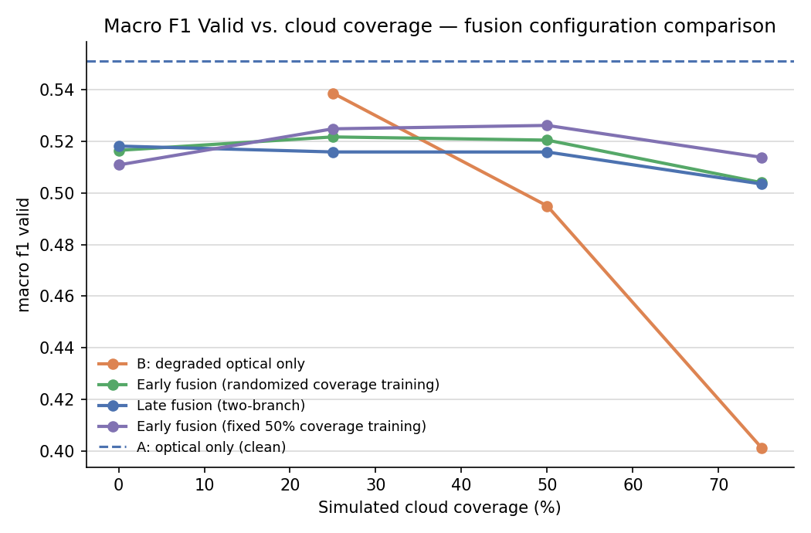
| Coverage | B (optical only) | Early fusion (random) | Late fusion | Early fusion (fixed 50%) |
|---|---|---|---|---|
| 0% | 0.551 | 0.516 | 0.518 | 0.511 |
| 25% | 0.539 | 0.522 | 0.516 | 0.525 |
| 50% | 0.495 | 0.520 | 0.516 | 0.526 |
| 75% | 0.401 | 0.504 | 0.503 | 0.514 |
Headline finding: the optical-only model holds up reasonably well through 25% coverage, then degrades sharply — a 49% relative drop in macro-F1 from clean to 75% coverage. Every SAR-fusion configuration stays close to flat across the same range and pulls clearly ahead once coverage exceeds ~50%, ending ~28% ahead (relative) at 75% coverage. SAR's benefit is concentrated at heavy degradation, not uniform across all coverage levels. One honest asymmetry: at 0% coverage, the optical-only model still edges out every SAR configuration (0.551 vs. ~0.51–0.52) — the SAR-fusion models are trained for robustness across a range of degradation levels and never see purely clean data at full weight, a reasonable trade-off given the case's actual ask concerns degraded conditions.
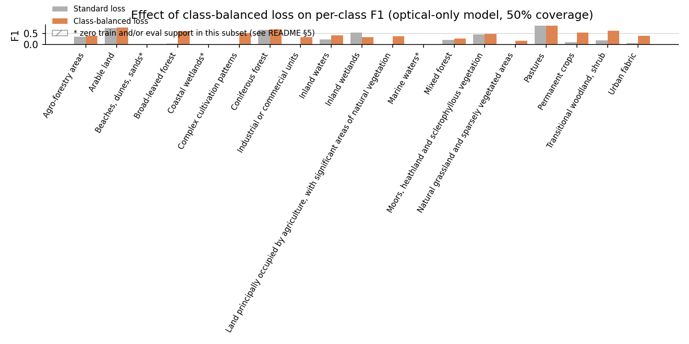
Class-balanced positive weighting clearly helps genuinely-imbalanced-but-learnable classes — "Industrial or commercial units" and "Complex cultivation patterns" move from ~0 to real positive F1 — while the three structurally-excluded classes (marked with an asterisk) predictably stay flat regardless of weighting, since no re-weighting scheme manufactures training examples that don't exist.
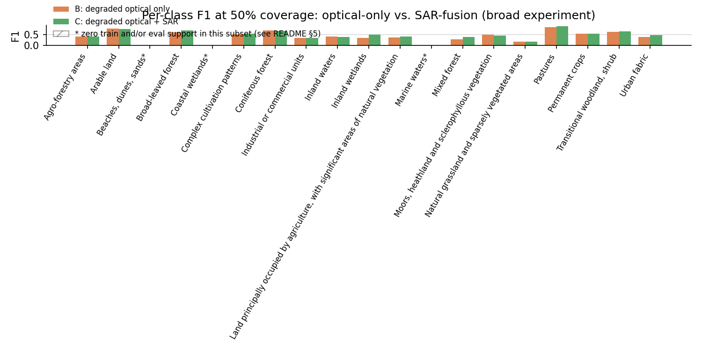
At 50% coverage, the SAR-fusion model matches or beats the optical-only model on essentially every class with non-trivial support.
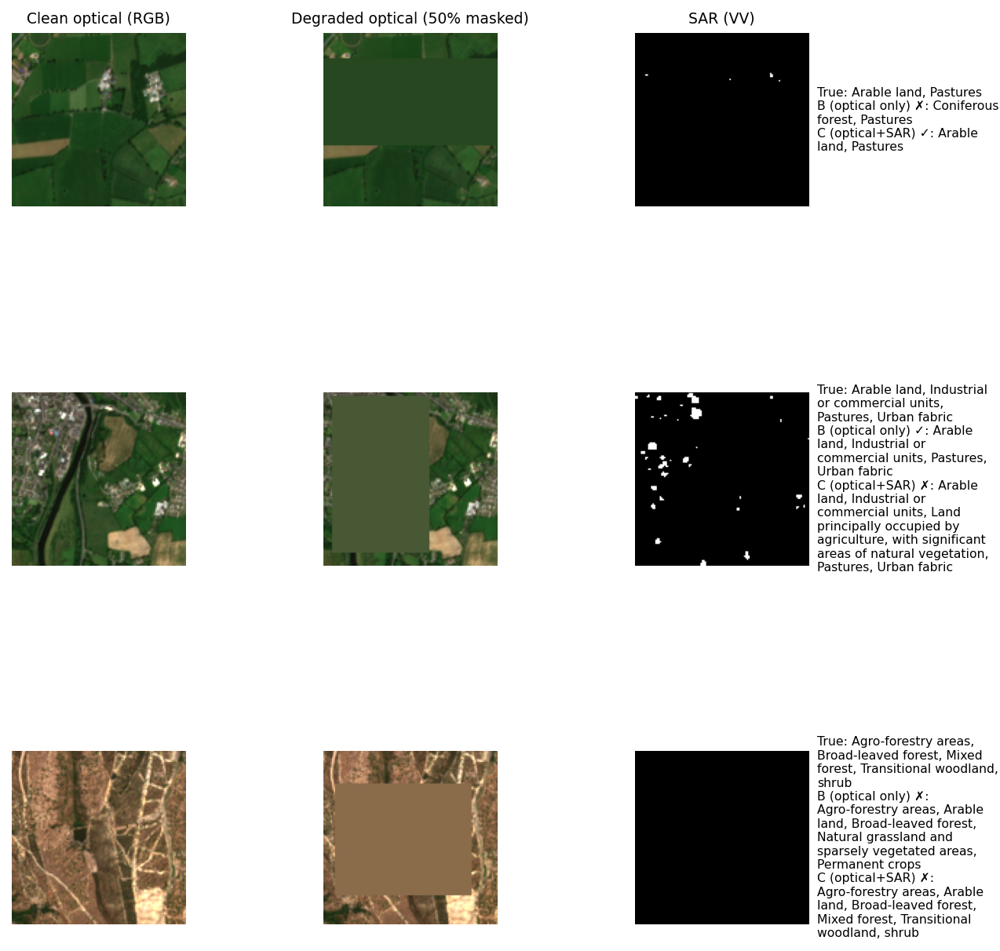
Shown deliberately as a mix, not cherry-picked wins. Across the full 50%-coverage test set, more patches flip from wrong to correct than the reverse, but the ratio is far from one-sided — SAR is a genuine net positive, not a universal fix, particularly on complex multi-label patches with several co-occurring classes.
Same architecture and training recipe as Section 8, using the fixed-50%-coverage configuration for the SAR-fusion model. Evaluated on this experiment's own held-out test set (2,049 patches):
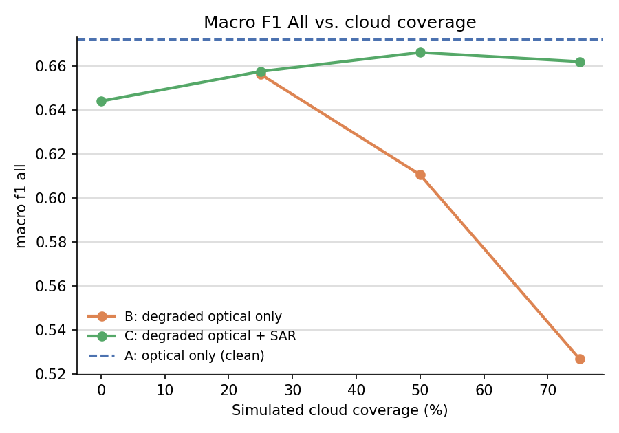
| Coverage | B (optical only) | C (optical + SAR) |
|---|---|---|
| 0% | 0.672 | 0.644 |
| 25% | 0.656 | 0.658 |
| 50% | 0.611 | 0.666 |
| 75% | 0.527 | 0.662 |
The qualitative pattern matches Section 8, and absolute numbers are substantially higher — but that is expected and not, by itself, evidence that "more depth helps": an 8-class task restricted to common, visually distinct land covers is simply an easier task, independent of training data volume. Isolating the effect of depth requires holding classes and test set fixed and varying only the training data — which is what Section 9.1 does.
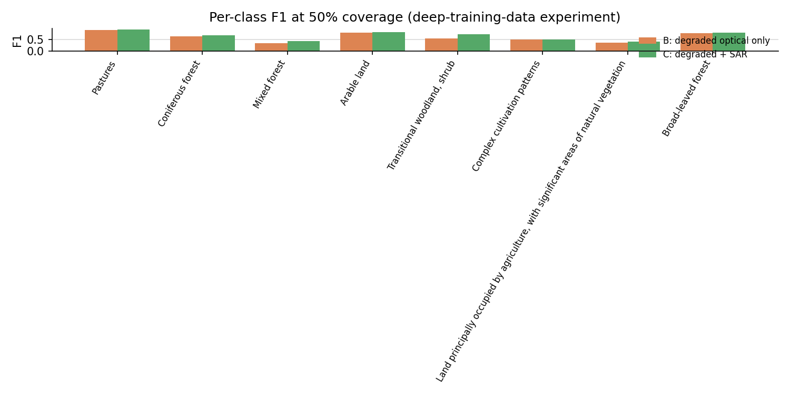
The broad experiment's already-trained 19-class models were re-evaluated on the deep experiment's test set, predictions sliced down to the same 8 classes — an apples-to-apples comparison of shallower training data (~250–860 examples/class) vs. deeper training data (~830–1,700+ examples/class), same classes, same test patches, same evaluation code (leakage between the two checked and confirmed absent — Section 7.3).
| Coverage | Fewer ex./class B | More ex./class B | Fewer ex./class C | More ex./class C |
|---|---|---|---|---|
| 0% | 0.651 | 0.672 (+0.021) | 0.631 | 0.644 (+0.013) |
| 25% | 0.647 | 0.656 (+0.009) | 0.641 | 0.658 (+0.017) |
| 50% | 0.615 | 0.611 (−0.005) | 0.648 | 0.666 (+0.018) |
| 75% | 0.537 | 0.527 (−0.010) | 0.636 | 0.662 (+0.026) |
The answer is genuinely mixed, not a clean "yes." For the SAR-assisted model, more depth helped consistently, and by an increasing margin as coverage increases. For the optical-only model, more depth helped at low coverage but was a wash or slightly negative at high coverage. A plausible explanation: under heavy masking, the optical-only model's bottleneck is not "not enough training examples" — it is "not enough visual signal left in the input, period." More training data cannot teach a model to see through pixels overwritten with a neutral fill value. Training-data depth and SAR fusion address different bottlenecks — depth alone would not have closed the degradation gap that SAR closes.
Mean predictive entropy is used as a simple uncertainty proxy across coverage levels; Expected Calibration Error (ECE) via temperature scaling checks absolute calibration quality at one fixed operating point.
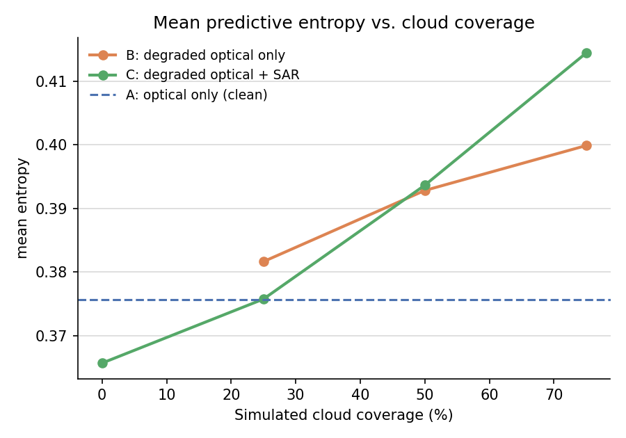
The optical-only model's mean entropy barely moves (0.376 → 0.400) even as its macro-F1 collapses by half from clean to 75% coverage — it fails confidently, not appropriately uncertainly, the less useful failure mode for any system using predicted confidence to decide when to trust a result. The SAR-fusion model's entropy rises more with coverage (0.366 → 0.414), a small but directionally correct signal that it "knows" the input is harder.
A single temperature is fit on validation-set logits only, then ECE is measured before/after on the test set, at 50% coverage:
| Model | Temperature | ECE before | ECE after |
|---|---|---|---|
| B (optical only) | 0.802 | 0.0335 | 0.0086 |
| SAR-fusion | 0.899 | 0.0236 | 0.0168 |
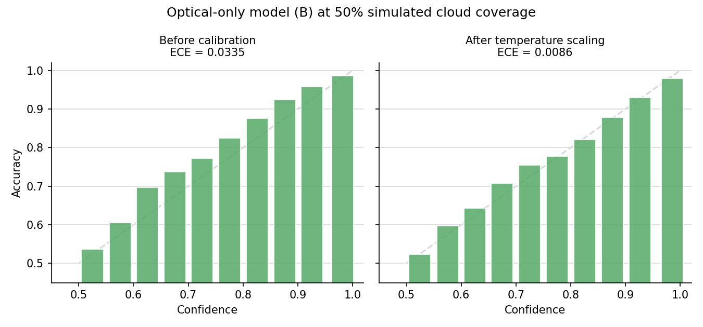
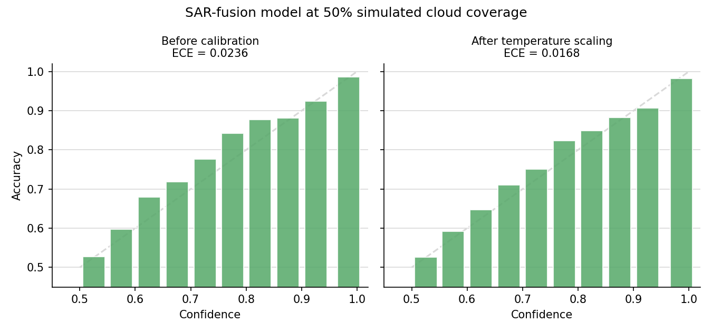
Both models are mildly underconfident at this operating point before correction (bars sit above the diagonal), and a temperature below 1 (which sharpens rather than softens probabilities) fixes this well for both. This refines rather than contradicts the entropy finding above: a model's probabilities can be reasonably well-calibrated in an absolute sense at one coverage level while still being insensitive to how input difficulty changes across coverage levels — both are true simultaneously here. The SAR-fusion model's calibration was already closer to ideal before correction, consistent with the idea that fusing an independent second modality moderates overconfidence somewhat.
Per-class F1 shows that a class is missed, not what the model says instead. Because this is a multi-label problem, a standard single-label confusion matrix doesn't directly apply; instead, for every test sample and every true class a model misses, every class it wrongly adds on that same sample is counted as a "confused-for" pair — computed at 50% coverage on the broad experiment's test set.
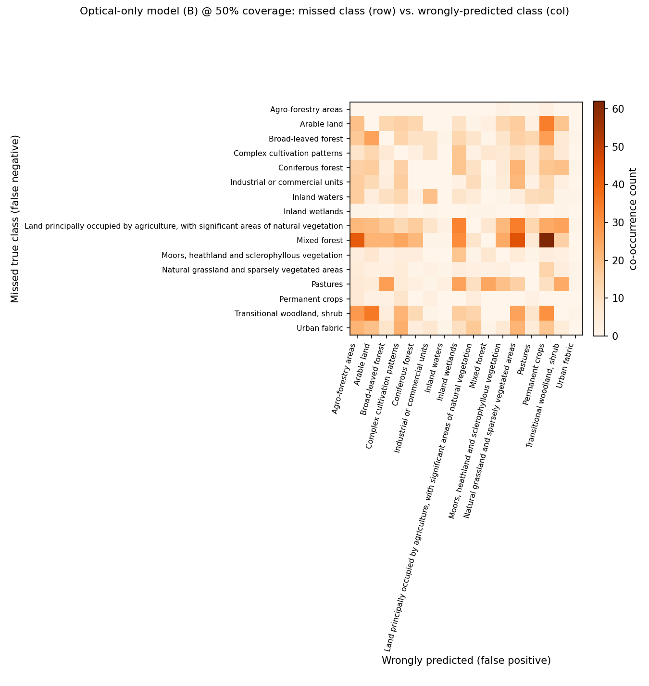
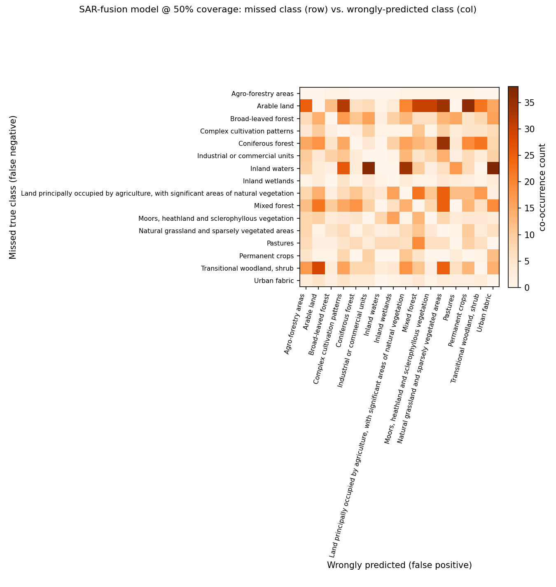
The optical-only model's dominant confusion is missing "Mixed forest" and instead predicting "Permanent crops," "Natural grassland," or "Agro-forestry areas" — semantically quite different land covers, consistent with the model falling back on whatever texture remains once enough of a forest patch is masked, rather than degrading toward a visually similar forest type.
The SAR-fusion model's confusion pattern is different in kind, not just smaller: its top confusion is missing "Inland waters" and predicting "Urban fabric" or "Industrial or commercial units" — a surprising water-vs-built-up mix-up with no obvious optical explanation. A plausible mechanism: calm inland water and certain urban/industrial surfaces can produce superficially similar low-texture SAR backscatter, and the fusion model may occasionally import this confusion rather than resolve it. This is a genuine, non-obvious failure mode that aggregate F1 numbers alone would never surface.
In rough priority order, if given more time or compute budget:
pip install -r requirements.txt python src/download_metadata.py # ~4.3 MB python src/select_subset.py # broad-experiment selection (19 classes) python src/extract_subset.py # streams ~1.8 GB from Zenodo python src/preprocess.py # cached tensors + norm stats python src/train_baseline_unweighted.py # unweighted-loss baseline (for the loss-ablation figure) python src/run_broad_experiment.py # broad experiment: trains & evaluates python src/confusion_analysis.py # class-confusion matrices (no retraining) python src/select_subset_deep.py # deep-experiment selection (8 classes) python src/extract_subset.py subset_patches_v3.csv # 2nd pass, same tiles, ~1.8 GB python src/preprocess.py subset_patches_v3.csv _v3 # cache + norm stats python src/run_deep_experiment.py # deep experiment + cross-experiment comparison python src/regenerate_final_figures.py # calibration/entropy figures (no retraining)
train_baseline_unweighted.py must run before run_broad_experiment.py for the class-balanced-loss ablation figure (Section 8.1) to be generated.
src/ all pipeline code, one script per pipeline stage
data/ metadata, subset selection CSVs for both experiments,
raw extracted GeoTIFFs (excluded from version control, ~2.75 GB)
outputs/cache/ preprocessed tensors, shared across both experiments (excluded, ~7.9 GB)
outputs/checkpoints/ trained model weights (baseline + 3 fusion configurations, broad experiment;
baseline + 1 fusion configuration, deep experiment)
outputs/metrics/ results tables, per-epoch training history, calibration and confusion
summaries, cross-experiment comparison data
outputs/figures/ every figure referenced in this document and in README.md
README.md top-level narrative and results (companion to this document)
DATA_ACCESS.md full data-access research trail (Section 3 of this document, in detail)